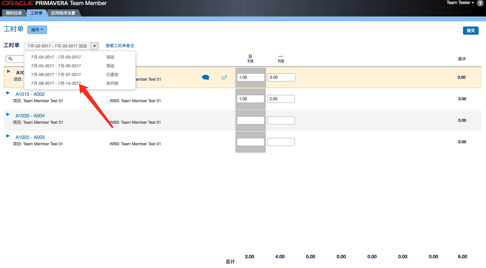

0.基本设置
-
工时填报人员
管理员 > 用户存取 > 新建用户

用户模块存取添加 工时单 和 团队成员
-
工时审批经理
全局安全配置，设置资源经理的存取权限

选择审批经理的用户为资源经理的配置
设置资源的审批流，在工时审批经理处，选择改用户
1.添加工时周期
管理员 > 企业数据 > 工时单周期
新建周期并保存
2.分配任务到资源上
选择任务 > 分配 > 选择资源
分配需要的资源
根据需要调整时间和周期
3.登录Team Member填报工时
打开Team Member : http://[server-ip]:8207/p6tmweb
选择周期
选择自动打开工时单
找到任务
填报工时
提交即可
4.资源经理进行审批
打开仪表板 > 批准工时单
选择 资源经理 身份
选择 工时 周期
通过／驳回该工时单
登录Team Member 查看状态